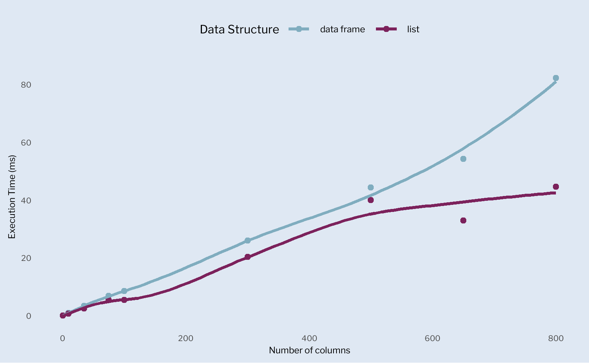

x <- (1:6)
print(x)
#| [1] 1 2 3 4 5 6What’s in a name?
If you’d like to know your way around the programming environment, you first have to understand how R’s OOP works. Binding is one of the most basic functions performed in R so let’s start there:
R assigns values to a name, and not vice-versa. This code is creating an object, a vector with 6 elements. This object is then bound to the name x– which is also a variable. The name acts as a reference to the values 1 through 6. This concept is clearly demonstrated by binding the existing values in x to y. This action doesn’t create a copy of (1:6), but binds the same values to a new name y. This doesn’t mean that you won’t see two names in your environment, instead, it shows that y is also referencing (1:6).
y <- xHow do we know this? Well, we can access the object’s identifier to make sure both x and y point to the same object (1:6).
print(lobstr::obj_addr(x))
#| [1] "0x2c05d4d5bd0"
print(lobstr::obj_addr(y))
#| [1] "0x2c05d4d5bd0"
## Another example of this behavior
print(lobstr::obj_addr(mean))
#| [1] "0x2c058c0d440"
print(lobstr::obj_addr(base::mean))
#| [1] "0x2c058c0d440"
print(lobstr::obj_addr(match.fun("mean")))
#| [1] "0x2c058c0d440"Changes to a name
The naming possibilities seem endless, but they’re actually limited. Always use syntactic names that consists of letters, digits, . and _. You can’t begin with _ or a digit, and can’t use any reserved words like TRUE, FALSE,NULL,if, and function1. To override these rules, you have to surround the name in back–ticks.
What happens when I modify y? Do I get a new object or the same object, "0x1c7fb8fc418" with new values? A new object is created, but the original object (1;6), did not change2. R simply created a new object with one value changed, and rebound y to it.
x <- 1:6
y <- x
cat(tracemem(y), "\n")
#> <0000023889E515A0>
# Modified object
y[[6]] <- 10
#> tracemem[0x0000023889e515a0 -> 0x0000023891546ef8]:
#> tracemem[0x0000023891546ef8 -> 0x0000023890d854f8]:
untracemem(y) # to stop tracing y
# Using a function to test this concept
f <- function(a){
a
}
cat(tracemem(x), "\n")
z <- f(x)
# no copy made. Bound z to (1:6)
untracemem(x)We just performed copy-on modify3 and, hopefully, realized that R objects are immutable– once created, it will stay unchanged4.
Lists
Lists store elements that point to a specific value, just like variables; however, R uses shallow copy–on modify when binding values to a new list. In other words, the list object and its bindings are copied, but not the values to which the elements are pointing.
l1 <- list(c(1:4),"a")
lobstr::obj_addr(l1)
#| [1] "0x2c05f625418"
l2 <- l1
lobstr::obj_addr(l2)
#| [1] "0x2c05f625418"
# Modify l2
l2[[3]] <- 25
lobstr::obj_addr(l2)
#| [1] "0x2c05ee6e938"
## Let's look at values shared across lists
lobstr::ref(l1,l2)
#| █ [1:0x2c05f625418] <list>
#| ├─[2:0x2c05f625518] <int>
#| └─[3:0x2c05d9b8660] <chr>
#|
#| █ [4:0x2c05ee6e938] <list>
#| ├─[2:0x2c05f625518]
#| ├─[3:0x2c05d9b8660]
#| └─[5:0x2c05d9b84d8] <dbl>Data frames
Data frames are lists of vectors so modifying a column– one list– will not affect the binding of the other columns. However, modifying a row forces R to copy every column in the data frame.
d1 <- data.frame(x = (1:6), y = (7:12))
lobstr::obj_addr(d1)
#| [1] "0x2c05ee95ad8"
d2 <- d1
lobstr::obj_addr(d2)
#| [1] "0x2c05ee95ad8"
# Modify one column
d2[,2] <- d2[,2] * 3
ref(d1,d2)
#| █ [1:0x2c05ee95ad8] <df[,2]>
#| ├─x = [2:0x2c05e05aec8] <int>
#| └─y = [3:0x2c05e05adb0] <int>
#|
#| █ [4:0x2c05f58e078] <df[,2]>
#| ├─x = [2:0x2c05e05aec8]
#| └─y = [5:0x2c05f740238] <dbl>
# Modify one row
d3 <- d1
d3[1,]<- d3[1,] *3
ref(d1,d3)
#| █ [1:0x2c05ee95ad8] <df[,2]>
#| ├─x = [2:0x2c05e05aec8] <int>
#| └─y = [3:0x2c05e05adb0] <int>
#|
#| █ [4:0x2c05efb20c8] <df[,2]>
#| ├─x = [5:0x2c05f0e2268] <dbl>
#| └─y = [6:0x2c05f0e20a8] <dbl>Character vectors
R uses a global string pool where each element in a character vector is a pointer to a unique string in the pool.

A little bit of functions
Let’s see how R’s binding behavior affects performance by using two simple functions and comparing the speed as the number of columns increase.
# Define function to create random data
make.rand <- function(nrow,ncol){
set.seed(2899)
ran.matrix <- matrix(runif(nrow * ncol)
,nrow = nrow)
as.data.frame(ran.matrix)
}
# Create function to perform simple operation on:
# Data frames
sum.df <- function(x,means){
means <- vapply(x,mean,numeric(1))
for(i in seq_along(means)){
x[[i]] <- x[[i]] + means[[i]]
}
x
}
# and lists
sum.list <- function(x,means){
x <- as.list(x)
x <- sum.df(x,means)
list2DF(x) # using list2DF to level performance of both functions
}
make.rand(2,2) # testing function with 2×2 matrix
#| V1 V2
#| 1 0.250 0.7588
#| 2 0.422 0.0154As a rule of thumbs, initialize vectors outside of loops. Move the computation of the means vector inside the for loop, and you will notice a 17,000% increase in computation time.
I’ve created two functions to wrap the mean addition of a data frame and a list of randomly generated data. Next, I’ll create a function to evaluate performance of each operation on dfs and lists and thus the overhead of for loops5.
# Function to create ran. data, calc. mean add., and eval. performance.
bench.means <- function(ncol){
df <- make.rand(nrow = 1e4,ncol = ncol)
means <- vapply(df,mean,numeric(1), USE.NAMES = F)
bench::mark("data frame" = sum.df(df,means),
"list" = sum.list(df,means),
time_unit = "ms")
}
bench.means(1) # testing function w. 1 column
#| # A tibble: 2 × 6
#| expression min median `itr/sec` mem_alloc `gc/sec`
#| <bch:expr> <dbl> <dbl> <dbl> <bch:byt> <dbl>
#| 1 data frame 0.0465 0.101 8674. 105.2KB 12.2
#| 2 list 0.0628 0.125 6680. 93.3KB 11.6Using bench::press() I’ll iterate over a vector of columns to evaluate performance speed as ncol increases and then visualize the execution time for data frames and lists.
results <- bench::press(
ncol = c(1,10,35,75,100,300,500,650,800),
bench.means(ncol)
)
# Customize fonts
font_add_google("Libre Franklin","libre")
showtext_auto()
text <- "libre"
# Custom color palette
cols <- c("#80ADBF","#7c225c")
# Create custom plot
ggplot(results,
aes(ncol,median,col = attr(expression,"description"))) +
geom_point() +
geom_smooth(se = FALSE) +
labs(x = "Number of columns",
y = "Execution Time (ms)",
colour = "Data Structure") +
scale_color_manual(values = cols) +
theme_minimal() +
theme(legend.position = "top",
legend.title = element_text(family = text, size = 23),
legend.text = element_text(family = text, size = 18),
plot.background = element_rect(fill = "#dfe8f3",
color = "NA"),
axis.title = element_text(family = text, size = 18,
hjust = .5),
axis.text = element_text(family = text,size = 16),
panel.grid.major = element_blank(),
panel.grid.minor = element_blank()
)
x <- make.rand(nrow = 1e4,ncol = 5)
means <- vapply(x,mean,numeric(1))
for(i in seq_along(means)){
x[[i]] <- x[[i]] + means[[i]]
}
# How many times is the data frame copied during one iteration?
cat(tracemem(x), "\n")
# <0x000001b594610f08>
for(i in 1:2){
x[[i]] <- x[[i]] + means[[i]]
}
# tracemem[0x000001b594610f08 -> 0x000001b597fb9468]
# tracemem[0x000001b597fb9468 -> 0x000001b597fb93f8]: [[<-.data.frame [[<-
# tracemem[0x000001b597fb93f8 -> 0x000001b597fb9388]
# tracemem[0x000001b597fb9388 -> 0x000001b597fb9318]: [[<-.data.frame [[<-
untracemem(x)The execution time for a data frame is significantly higher after a few hundred columns are added. R’s copy-on modify behavior creates three copies of the data frame with each iteration of the for loop while a list is only copied once. This behavior is not problematic for a few columns so this approach may not pay off.
Vectors
Vectors come in two flavors, atomic6 and lists. There are four primary types of atomic vectors: logical, integer, double, and character. We refer to integer and double vectors as numeric. There are also complex and raw vectors to deal with complex numbers and binary data7.
flowchart LR
A[Logical] ---> B((Atomic))
B --> C{Vector}
E(Numeric) --> B
D[Character] ---> B
F[Double] --> E
G[Integer] --> E
To create scalars8 of each type of atomic vectors we use TRUE or FALSE9 for logicals. Doubles are specified in decimal, scientific or hexadecimal form and can take three special forms, Inf, -Inf, and NaN. Integers are written like doubles but must be followed by L, while strings are surrounded by " or '.
dbl <- c(1.2,2.45,3.0)
int <- c(1,6,10,4)
log <- c(TRUE,FALSE,TRUE,FALSE)
char <- c("TRUE","FALSE","TRUE","FALSE")
typeof(dbl); length(dbl)
#| [1] "double"
#| [1] 3
typeof(int); length(int)
#| [1] "double"
#| [1] 4
typeof(log); length(log)
#| [1] "logical"
#| [1] 4
typeof(char); length(char)
#| [1] "character"
#| [1] 4
# NA values
# Most computations involving a missing value will return a missing value
NA * 5
#| [1] NA
NA > 10
#| [1] NA
!NA
#| [1] NA
NA^0
#| [1] 1
NA | TRUE # TRUE has a value of 1
#| [1] TRUE
NA & FALSE # FALSE has a value of 0
#| [1] FALSE
# Missing values propagate
x <- c(NA,5,10,13,NA)
x == NA
#| [1] NA NA NA NA NA
#Use is.na() instead
is.na(x)
#| [1] TRUE FALSE FALSE FALSE TRUEInstead of testing whether you’re working with a vector using is.vector() or is.atomic(), or is.numeric()10; use more specific commands like is.logical(), is.double(), is.integer(),is.character(). For atomic vectors, type is a property of the entire vector– all elements must be of the same type. This will be forcibly achieved by automatic coercion in a pre-determined order:
flowchart LR A(character) --> B(double) B --> C(integer) C --> D(logical)
You can deliberately coerce an object by using as.*(); however, you run the risk of producing NA if the object cannot be coerced, i.e, coercing character strings to numeric objects.
Attributes
Vectors do not include matrices, arrays,factors, or date–time objects. These types are built as attributes of a vector. These attributes are name–value pairs that attach metadata to an object. You can set attributes with structure(), and retrieved with attr() and attributes(), individually or collectively. However, most attributes, except names and dim, are lost by most operations, unless you create an S3 class for them.
a <- 1:3
a <- structure(1:3,
x = "ay",
y = "caramba"
)
str(attributes(a))
#| List of 2
#| $ x: chr "ay"
#| $ y: chr "caramba"
#Don't use attr(a,"names") to assign names to elements in an object.
# Instead use one of these three options:
b <- c(d = c("1,2,3"),e = "ay", f = "caramba")
# or use names()#
b <- c("1,2,3","ay","caramba")
names(b) <- c("d","e","f")
# or Inline, with setNames #
b <- setNames(c("1,2,3","ay","caramba"), c("d","e","f"))The dim attribute allows a vector to behave like a two–dimensional matrix or a multi–dimensional array. Matrices and arrays can therefore be created in place by using the dim() command or matrix() and array()
| Vector | Matrix | Array |
|---|---|---|
| names() | rownames(), colnames() | dimnames() |
| length() | nrow(), ncol() | dim() |
| c() | rbind(),cbind() | abind::abind() |
| — | t() | aperm() |
| is.null(dim(x)) | is.matrix() | is.array() |
S3 Vectors
The class attribute turns vectors into S3 objects. S3 objects are built on top of a base type, and store additional information in other attributes. Four important S3 vectors used in R are factors, categorical data with values represening a fixed set of levels;date vectors, date—times stored in POSIXct, and difftime to represent durations.
flowchart LR
A[Logical] ---> B((Atomic))
B --> C{Vector}
E(Numeric) --> B
D[Character] ---> B
F[Double] --> E
G[Integer] --> E
H[/factor/] -->G
I[/POSIXct/] -->F
J[/Date/] --> F
Factors
Factors are built on top of an integer vector with two attributes: a class “factor” and levelsto define the set of allowed values. Tabulating factor vectors will get you a count of all categories, observed and unobserved, which is not the case with character vectors. Ordered factors are a variation of factors where the order of levels is meaningful(poor, good, best).
f <- factor(c("ay", "ay","caramba","caramba","123"))
print(f)
#| [1] ay ay caramba caramba 123
#| Levels: 123 ay caramba
typeof(f)
#| [1] "integer"
# Factor levels count
gender <- c("m","m","m")
gender_factor <- factor(gender, levels = c("m","f"))
# Tabulate
table(gender)
#| gender
#| m
#| 3
table(gender_factor)
#| gender_factor
#| m f
#| 3 0
# Ordered Factors
health <- ordered(c("poor","good","poor","best","good"),
levels = c("poor","good","best"))
print(health)
#| [1] poor good poor best good
#| Levels: poor < good < bestDates & Date—times
Date vectors are built on top of double vectors and only have one attribute, class. The value of the double vector, after stripping the class, represents the number of days since the Unix epoch(1970-01-01).
Date—times vector come in two formats, POSIXct and POSIXlt, built on top of double vectors, where the values of POSIXct, calendar time, represents the number of seconds since the Unix epoch.
today <- Sys.Date()
typeof(today)
#| [1] "double"
attributes(today)
#| $class
#| [1] "Date"
date <- as.Date("1970-02-02")
unclass(date)
#| [1] 32
# Date-times
point_ct <- as.POSIXct("2020-02-02", tz = "UTC") # tz is timezone
print(point_ct)
#| [1] "2020-02-02 UTC"
typeof(point_ct)
#| [1] "double"
attributes(point_ct)
#| $class
#| [1] "POSIXct" "POSIXt"
#|
#| $tzone
#| [1] "UTC"Durations
Durations represent the amount of time between pairs of dates or date—times stored as “difftimes”. Difftimes are also built on top of doubles and have a units attribute that determines how the integer is interpreted.
week <- as.difftime(1,units = "weeks")
print(week)
#| Time difference of 1 weeks
typeof(week)
#| [1] "double"
attributes(week)
#| $class
#| [1] "difftime"
#|
#| $units
#| [1] "weeks"
week_days <- as.difftime(7,units = "days")
print(week_days)
#| Time difference of 7 days
typeof(week_days)
#| [1] "double"
attributes(week_days)
#| $class
#| [1] "difftime"
#|
#| $units
#| [1] "days"Lists
Lists are one level above atomic vectors and can contain elements of any type, not just vectors. Lists are constructed with the list() command. Because elements in a list are really just references to objects, creating a list doesn’t involve copying the objects into the list. In general, lists can contain any vector, matrix, data frame or array. Lists are also recursive because they can contain other lists, which makes them fundamentally different from vectors.
#lists can contain any objects(vector, df, matrix)
l1 <- list(c(1:6, mtcars,matrix(1:20,4,5)))
typeof(l1)
#| [1] "list"
# Lists are smaller than expected
lobstr::obj_size(l1)
#| 6.33 kB
# Recursive property
l2 <- list(list(list(1:200)))
lobstr::obj_size(l2)
#| 848 B
str(l2)
#| List of 1
#| $ :List of 1
#| ..$ :List of 1
#| .. ..$ : int [1:200] 1 2 3 4 5 6 7 8 9 10 ...
# Turn list into vector…and face the consequences
#| unlist(l1)Matrices & Arrays
Matrices and arrays are created by using the dimension attribute of atomic vectors. We can also create list–matrices and list–arrays by means of the dim attribute. These structures can be helpful for modeling objects on a spatio–temporal 3D grid.
Data frames & Tibbles
A data frame is a named list of vectors with attributes for names of columns and row.names, and its class data.frame. Data frames must be made up of vectors of equal length since by definition, they must be rectangular structures.
df1 <- data.frame(x = 1:6, y = letters[1:6])
typeof(df1)
#| [1] "list"
attributes(df1)
#| $names
#| [1] "x" "y"
#|
#| $class
#| [1] "data.frame"
#|
#| $row.names
#| [1] 1 2 3 4 5 6
# no. of columns
length(df1)
#| [1] 2
# Column names
names(df1)
#| [1] "x" "y"Tibbles are provided by the tibble package. They’re very similar to data frames, except that the class vector is longer, and they don’t coerce their input.
df2 <- tibble::tibble(x = 1:6, y = letters[1:6])
typeof(df2)
#| [1] "list"
attributes(df2)
#| $class
#| [1] "tbl_df" "tbl" "data.frame"
#|
#| $row.names
#| [1] 1 2 3 4 5 6
#|
#| $names
#| [1] "x" "y"
length(df2)
#| [1] 2
names(df2)
#| [1] "x" "y"Both, data frames and tibbles, do recycle shorter inputs; however, recycling only occur for columns that are integer multiples of the longest column and for vectors of length one, respectively. Finally, tibbles do allow you to call other variables during construction.
data.frame(x = 1:6, y = 1:3)
#| x y
#| 1 1 1
#| 2 2 2
#| 3 3 3
#| 4 4 1
#| 5 5 2
#| 6 6 3
data.frame(x = 1:7, y = 1:3)
#| Error in `data.frame()`:! arguments imply differing number of rows: 7, 3
tibble::tibble(x = 1:4, y = 1)
#| # A tibble: 4 × 2
#| x y
#| 1 1 1
#| 2 2 1
#| 3 3 1
#| 4 4 1
tibble::tibble(x = 1:4, y = 1:2)
#| Error in `tibble::tibble()`: ! Tibble columns must have compatible sizes.
#| • Size 4: Existing data.
#| • Size 2: Column `y`.
#| ℹ Only values of size one are recycled.
#|
data.frame(x = 1:4, y = x * 2)
#| Error: object 'x' not found
#|
tibble::tibble(x = 1:4, y = x * 2)
# A tibble: 4 × 2
#| x y
#| <int> <dbl>
#| 1 1 2
#| 2 2 4
#| 3 3 6
#| 4 4 8You can also create data frames and tibbles with list columns by either adding the list/matrix after creating the data frame or by wrapping it in I()11. Matrices, on the other hand, must have the same number of rows as the data frame.
# Add after creation
df <- data.frame(x = 1:3)
df$y <- list(1:2, 1:3,1:4)
# Use I()
data.frame(x = 1:3,
y = I(list(1:2, 1:3,1:4)))
#| x y
#| 1 1 1, 2
#| 2 2 1, 2, 3
#| 3 3 1, 2, 3, 4
# Tibbles can have lists direclty included
tibble::tibble(x = 1:3,
y = list(1:2, 1:3, 1:4))
#| # A tibble: 3 × 2
#| x y
#| <int> <list>
#| 1 1 <int [2]>
#| 2 2 <int [3]>
#| 3 3 <int [4]>
# Matrices are added after creation
dfmat <- data.frame(x = 1:3 * 5)
dfmat$y <- matrix(1:15, nrow = 3) # same no. of rows as dfmat
str(dfmat)
#| 'data.frame': 3 obs. of 2 variables:
#| $ x: num 5 10 15
#| $ y: int [1:3, 1:5] 1 2 3 4 5 6 7 8 9 10 ...Footnotes
Check out the complete list of restricted names in
?Reserved↩︎ALTREP, or alternative representation, allows R to represent certain vectors in a very compact fashion. Number sequences are one example of this behavior since only the first and last numbers are stored. For this reason every sequence is the same size, 680B.↩︎
If an object has a single name bound to it, R will modify–in–place–the new value will be appended to the same object.↩︎
When an object is not longer bound to a name, the garbage collector will delete it to free up memory↩︎
each iteration of the loop copies the data frame three times. Ideally, this behavior is reduced by using lists↩︎
when the inputs of a vector are atomic, the resulting vector will also be atomic. This is called flattening.↩︎
Review the documentation for
as.raw()andas.complex().↩︎a special syntax to create an individual value↩︎
also abbreviated as
TandF↩︎These commands don’t test if you have a vector. Review the documentation to figure out what they do.↩︎
Review the documentation for
AsIs()↩︎